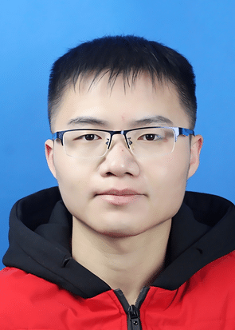

WEN JianPhD Candidate Institute of Robotics and Automatic Information System Email: wenjian@mail.nankai.edu.cn |
 |


BiographyI am currently a PhD candidate in the Institute of Robotics and Automatic Information System, Nankai University, supervised by Prof. Xuebo Zhang. Before that, I received the B.S. degree of Automation in the College of Computer and Control Engineering, Nankai University, in 2017. My research focuses on mapping and motion planning for mobile robots. |
||
Publications 1. CAE-RLSM: Consistent and efficient redundant line segment merging for online feature map building
[paper] 2. MRPB 1.0: A unified benchmark for the evaluation of mobile robot local planning approaches [paper] [code] 3. A novel 2D laser scan matching algorithm for mobile robots based on hybrid features [paper] 4. Autonomous indoor exploration via graph-based SLAM using directional endpoint features and polygon
map construction [paper] 5. Goal-biased bidirectional RRT based on curve-smoothing [paper] Preprint 1. EffMoP: Efficient motion planning based on heuristic-guided motion primitives pruning and path
optimization with sparse-banded structure
[paper] |
||
Honors & AwardsThe best poster paper award of The First Artificial Intelligence Conference and Entrepreneurs Summit Forum of Chinese Optics Valley, Wuhan, China, May. 2019. The best paper finalist of 2018 IEEE International Conference on Real-time Computing and Robotics, Kandima, Maldives, Aug. 2018. Scholarship of “Ming-Shan-Yun-Neng”, College of Computer and Control Engineering, Nankai University, Oct. 2017. Scholarship of “Gong-Neng” (First Prize), College of Artificial Intelligence, Nankai University, Oct. 2020. |
||
Professional Activities
|
||
|
© WEN Jian | Last updated: Mar.2 2021 |